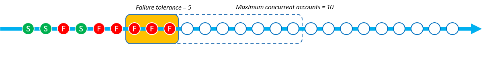

Die vorliegende Übersetzung wurde maschinell erstellt. Im Falle eines Konflikts oder eines Widerspruchs zwischen dieser übersetzten Fassung und der englischen Fassung (einschließlich infolge von Verzögerungen bei der Übersetzung) ist die englische Fassung maßgeblich.
Parameter „Parallelitätsmodus“
Der Parallelitätsmodus ist ein Parameter für StackSetOperationPreferences, mit dem Sie den Umfang der Parallelität bei Stack-Set-Vorgängen auswählen können. Dabei haben Sie die Wahl zwischen den folgenden Modi:
-
Strikte Fehlertoleranz: Diese Option senkt den Umfang der Parallelität dynamisch, damit die Anzahl der fehlerhaften Konten niemals den Wert der Fehlertoleranz +1 überschreitet. Die anfängliche tatsächliche Parallelität wird auf den Wert der Option Maximale Anzahl gleichzeitiger Konten oder auf den Wert der Fehlertoleranz +1 festgelegt (je nachdem, welcher niedriger ist). Die tatsächliche Parallelität wird dann proportional zur Anzahl der Fehler reduziert. Dies ist das Standardverhalten.
-
Lose Fehlertoleranz: Diese Option entkoppelt die Fehlertoleranz von der tatsächlichen Parallelität. Dadurch können Stack-Set-Vorgänge unabhängig von der Fehlerzahl in dem Umfang der Parallelität ausgeführt werden, der durch den Wert Maximale Anzahl gleichzeitiger Konten festgelegt ist.
Strikte Fehlertoleranz senkt die Bereitstellungsgeschwindigkeit bei fehlerhaften Stack-Set-Vorgängen, da die Parallelität bei jedem Fehler abnimmt. Lose Fehlertoleranz priorisiert die Bereitstellungsgeschwindigkeit und nutzt dennoch die Sicherheitsfunktionen von AWS CloudFormation. So können Sie Fehler bei Stack-Set-Vorgängen auf häufig auftretende Probleme hin überprüfen und beheben, z. B. Probleme im Zusammenhang mit vorhandenen Ressourcen, Servicekontingenten und Berechtigungen.
Weitere Informationen zu StackSets Stack-Operationsfehlern finden Sie unter Häufige Gründe für Störungen der Stack-Operationen.
Weitere Informationen zu den Optionen Maximale Anzahl gleichzeitiger Konten und Fehlertoleranz finden Sie unter Optionen in den Operationen für Stack-Sets.
So funktionieren die einzelnen Parallelitätsmodi
Die folgenden Abbildungen zeigen, wie der Parallelitätsmodus bei einem Stack-Set-Vorgang jeweils funktioniert. Die Knotenfolge stellt eine Bereitstellung in einer einzelnen AWS-Region dar und jeder Knoten ist ein Ziel-AWS-Konto.
- Strikte Fehlertoleranz
-
Wenn bei einem Stack-Set-Vorgang mit der Option Strikte Fehlertoleranz der Wert der Fehlertoleranz auf 5 und der Wert für Maximale Anzahl gleichzeitiger Konten auf 10 eingestellt ist, beträgt die tatsächliche Parallelität 6. Die tatsächliche Parallelität beträgt 6, da der Wert der Fehlertoleranz von 5 +1 niedriger ist als der Wert für Maximale Anzahl gleichzeitiger Konten.
Das folgende Image zeigt die Auswirkungen, die der Wert der Fehlertoleranz auf den Wert für Maximale Anzahl gleichzeitiger Konten hat, sowie die Auswirkungen, die beide Werte auf die tatsächliche Parallelität des Stack-Set-Vorgangs haben:

Wenn die Bereitstellung beginnt und es fehlerhafte Stack-Instances gibt, verringert sich die tatsächliche Parallelität, um eine sichere Bereitstellung zu gewährleisten. Die tatsächliche Gleichzeitigkeit verringert sich von 6 auf 5, wenn 1 Stack-Instance StackSets nicht bereitstellen kann.


Der Modus Strikte Fehlertoleranz verringert die tatsächliche Parallelität proportional zur Anzahl der fehlerhaften Stack-Instances. Im folgenden Beispiel verringert sich die tatsächliche Gleichzeitigkeit von 5 auf 3, wenn 2 weitere Stack-Instances nicht bereitstellen StackSets kann, wodurch die Gesamtzahl der ausgefallenen Stack-Instances auf 3 erhöht wird.

StackSets schlägt den Stack-Set-Vorgang fehl, wenn die Anzahl der ausgefallenen Stack-Instances dem definierten Wert von Fehlertoleranz +1 entspricht. Im folgenden Beispiel StackSets schlägt die Operation fehl, wenn es 6 fehlgeschlagene Stack-Instances gibt und der Fehlertoleranzwert 5 ist.
In diesem Beispiel hat 9 Stack- StackSets Instances (3 erfolgreich und 6 fehlgeschlagen) bereitgestellt, bevor der Stack-Set-Vorgang gestoppt wurde.
- Lose Fehlertoleranz
-
Wenn bei einem Stack-Set-Vorgang mit der Option Lose Fehlertoleranz der Wert der Fehlertoleranz auf 5 und der Wert für Maximale Anzahl gleichzeitiger Konten auf 10 eingestellt ist, beträgt die tatsächliche Parallelität 10.

Wenn die Bereitstellung beginnt und es fehlerhafte Stack-Instances gibt, ändert sich die tatsächliche Parallelität nicht. Im folgenden Beispiel ist 1 Stack-Vorgang fehlgeschlagen, die tatsächliche Parallelität bleibt jedoch bei 10.

Die tatsächliche Parallelität bleibt auch nach 2 weiteren Stack-Instance-Fehlern bei 10.

StackSets schlägt den Stack-Set-Vorgang fehl, wenn ausgefallene Stack-Instances den Fehlertoleranzwert überschreiten. Im folgenden Beispiel StackSets schlägt die Operation fehl, wenn es 6 fehlgeschlagene Stack-Instances gibt und die Fehlertoleranz 5 beträgt. Der Vorgang wird jedoch erst beendet, wenn die restlichen Vorgänge in der Parallelitätswarteschlange abgeschlossen sind.

StackSets stellt weiterhin Stack-Instances bereit, die sich bereits in der Parallelitätswarteschlange befinden. Das bedeutet, dass die Anzahl der fehlerhaften Stack-Instances höher sein kann als die Fehlertoleranz. Im folgenden Beispiel gibt es 8 fehlerhafte Stack-Instances, weil in der Parallelitätswarteschlange noch 7 Vorgänge ausgeführt werden mussten, obwohl der Stack-Set-Vorgang die Fehlertoleranz 5 erreicht hatte.
![Hierbei handelt es sich um einen Stack-Vorgang mit der Option Lose Fehlertoleranz. Die Fehlertoleranz ist auf 5 und Maximale Anzahl gleichzeitiger Konten auf 10 eingestellt. Insgesamt sind 8 Stack-Vorgänge fehlgeschlagen und die tatsächliche Parallelität blieb bei 10. Insgesamt sind 8 Stack-Instances fehlerhaft, weil in der Parallelitätswarteschlange selbst nach Überschreitung der Fehlertoleranzschwelle 5 immer noch 7 Vorgänge ausgeführt werden mussten. Nachdem die Fehlertoleranzschwelle erreicht und die Vorgänge in der Parallelitätswarteschlange abgeschlossen waren, schlug der Stack-Set-Vorgang fehl.](images/concurrency-soft-failure-tolerance-5.png)
In diesem Beispiel wurden 15 Stack- StackSets Instances (7 erfolgreich und 8 fehlgeschlagen) bereitgestellt, bevor der Stack-Vorgang gestoppt wurde.
Wählen zwischen strikter und loser Fehlertoleranz auf Grundlage der Bereitstellungsgeschwindigkeit
Die Wahl zwischen den Modi Strikte Fehlertoleranz und Lose Fehlertoleranz hängt von der bevorzugten Geschwindigkeit der Stack-Set-Bereitstellung und der zulässigen Anzahl von Bereitstellungsfehlern ab.
Die folgenden Tabellen zeigen, wie in den beiden Parallelitätsmodi jeweils mit einem Stack-Set-Vorgang umgegangen wird, der bei der versuchten Bereitstellung von insgesamt 1 000 Stack-Instances fehlschlägt. In jedem Szenario ist der Wert der Fehlertoleranz auf 100 Stack-Instances und der Wert für Maximale Anzahl gleichzeitiger Konten auf 250 Stack-Instances eingestellt.
Während Konten StackSets tatsächlich als gleitendes Fenster in die Warteschlange stellt (siehe So funktionieren die einzelnen Parallelitätsmodi), zeigt dieses Beispiel den Vorgang in Batches, um die Geschwindigkeit der einzelnen Modi zu veranschaulichen.
Strikte Fehlertoleranz
In diesem Beispiel mit dem Modus Strikte Fehlertoleranz wird die tatsächliche Parallelität im Verhältnis zur Anzahl der Fehler verringert, die jeweils im vorherigen Stapel aufgetreten sind. Jeder Stapel hat 20 fehlerhafte Instances, wodurch die tatsächliche Parallelität des folgenden Stapels um 20 verringert wird, bis der Stack-Set-Vorgang den Wert 100 der Fehlertoleranz erreicht.
In der folgenden Tabelle liegt die anfängliche tatsächliche Parallelität des ersten Stapels bei 101 Stack-Instances. Die tatsächliche Parallelität beträgt 101, da der Wert der Fehlertoleranz (100) +1 niedriger ist als der Wert für Maximale Anzahl gleichzeitiger Konten (250). Jeder Stapel enthält 20 fehlerhafte Bereitstellungen von Stack-Instances, wodurch sich die tatsächliche Parallelität jedes nachfolgenden Stapels um 20 Stack-Instances verringert.
| Strikte Fehlertoleranz | Stapel 1 | Stapel 2 | Stapel 3 | Stapel 4 | Stapel 5 | Stapel 6 |
|---|---|---|---|---|---|---|
| Anzahl der tatsächlichen Parallelität | 101 | 81 | 61 | 41 | 21 | - |
| Anzahl fehlerhafter Instances | 20 | 20 | 20 | 20 | 20 | - |
| Anzahl erfolgreicher Stack-Instances | 81 | 61 | 41 | 21 | 1 | - |
Beim Vorgang mit dem Modus Strikte Fehlertoleranz wurden 305 Bereitstellungen von Stack-Instances in 5 Stapeln abgeschlossen, bis der Stack-Set-Vorgang die Fehlertoleranz von 100 Stack-Instances erreichte. Beim Stack-Set-Vorgang werden 205 Stack-Instances erfolgreich bereitgestellt, bevor er fehlschlägt.
Lose Fehlertoleranz
In diesem Beispiel mit dem Modus Lose Fehlertoleranz wird unabhängig von der Anzahl der fehlerhaften Instances die gleiche Anzahl der tatsächlichen Parallelität beibehalten, die durch den Wert für Maximale Anzahl gleichzeitiger Konten von 250 Stack-Instances definiert ist. Bei den Stack-Set-Vorgängen wird die gleiche tatsächliche Parallelität beibehalten, bis der Wert der Fehlertoleranz von 100 Instances erreicht ist.
In der folgenden Tabelle liegt die anfängliche tatsächliche Parallelität des ersten Stapels bei 250 Stack-Instances. Die tatsächliche Gleichzeitigkeit ist 250, da der Wert für Maximale Anzahl gleichzeitiger Konten auf 250 festgelegt ist und der Modus für weiche Fehlertoleranz es ermöglicht, diesen Wert unabhängig von der Anzahl der Fehler als tatsächliche Gleichzeitigkeit StackSets zu verwenden. Obwohl in diesem Beispiel in jedem Stapel 50 Fehler aufgetreten sind, bleibt die tatsächliche Parallelität davon unberührt.
| Lose Fehlertoleranz | Stapel 1 | Stapel 2 | Stapel 3 | Stapel 4 | Stapel 5 | Stapel 6 |
|---|---|---|---|---|---|---|
| Anzahl der tatsächlichen Parallelität | 250 | 250 | - | - | - | - |
| Anzahl fehlerhafter Instances | 50 | 50 | - | - | - | - |
| Anzahl erfolgreicher Stack-Instances | 200 | 200 | - | - | - | - |
Mit den gleichen Werten für Maximale Anzahl gleichzeitiger Konten und Fehlertoleranz wurden beim Vorgang mit dem Modus Lose Fehlertoleranz 500 Bereitstellungen von Stack-Instances in 2 Stapeln abgeschlossen. Beim Stack-Set-Vorgang werden 400 Stack-Instances erfolgreich bereitgestellt, bevor er fehlschlägt.
Auswählen des Parallelitätsmodus mithilfe der AWS Management Console
Den Parallelitätsmodus für neue oder vorhandene Stack-Sets können Sie auf der Seite Optionen der Bereitstellung festlegen auswählen.

Weitere Informationen zum Erstellen von Stack-Sets mithilfe der AWS Management Console finden Sie unter Erstellen eines Stack-Sets.
Weitere Informationen zum Aktualisieren vorhandener Stack-Sets mithilfe der AWS Management Console finden Sie unter Aktualisieren Ihres Stack-Sets mithilfe der AWS CloudFormation -Konsole.
Weitere Informationen zum Löschen von Stack-Sets mithilfe der AWS Management Console finden Sie unter Löschen eines Stack-Sets mithilfe der AWS Management Console.
Auswählen des Parallelitätsmodus mithilfe der AWS Command Line Interface
Sie können den ConcurrencyMode Parameter mit den folgenden StackSets Befehlen verwenden:
Diese Befehle verfügen über einen bestehenden Parameter namens --operation-preferences, bei dem die Einstellung ConcurrencyMode verwendet werden kann. ConcurrencyMode kann auf einen der folgenden Werte eingestellt werden:
-
STRICT_FAILURE_TOLERANCE -
SOFT_FAILURE_TOLERANCE
Im folgenden Beispiel wird eine Stack-Instance mit dem STRICT_FAILURE_TOLERANCE ConcurrencyMode erstellt, wobei FailureToleranceCount auf 10 und MaxConcurrentCount auf 5 eingestellt ist:
aws cloudformation create-stack-instances \ --stack-set-nameexample-stackset\ --accounts123456789012\ --regionseu-west-1\ --operation-preferences ConcurrencyMode=STRICT_FAILURE_TOLERANCE,FailureToleranceCount=10,MaxConcurrentCount=5
Weitere Informationen zum Erstellen neuer Stack-Sets mithilfe der AWS Command Line Interface (CLI) finden Sie unter Erstellen eines Stack-Sets.
Weitere Informationen zum Aktualisieren vorhandener Stack-Sets mithilfe der AWS CLI finden Sie unter Aktualisieren Ihres Stack-Sets mithilfe der AWS CLI.
Weitere Informationen zum Löschen von Stack-Sets mithilfe der AWS CLI finden Sie unter Löschen eines Stack-Sets mithilfe der AWS CLI.